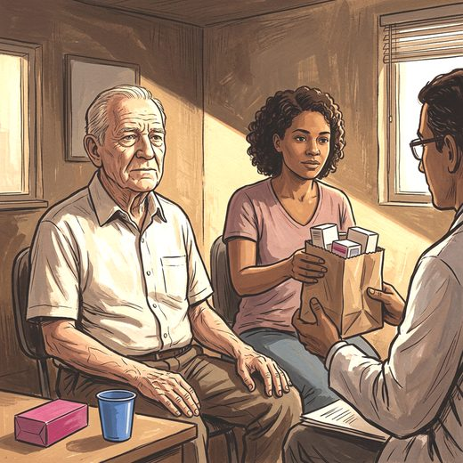

Consulta rápida à beira do leito
Condutas, doses e interações.
Referências da aula · 11
- Postuma RB, Berg D, Stern M, Poewe W, Olanow CW, Oertel W, et al. MDS clinical diagnostic criteria for Parkinson's disease. Mov Disord. 2015;30(12):1591-601. PMID 26474316. doi:10.1002/mds.26424.PubMedDOI
- Berg D, Postuma RB, Adler CH, Bloem BR, Chan P, Dubois B, et al. MDS research criteria for prodromal Parkinson's disease. Mov Disord. 2015;30(12):1600-11. PMID 26474317. doi:10.1002/mds.26431.PubMedDOI
- Simuni T, Chahine LM, Poston K, Brumm M, Buracchio T, Campbell M, et al. A biological definition of neuronal α-synuclein disease: towards an integrated staging system for research. Lancet Neurol. 2024;23(2):178-90. PMID 38267190. doi:10.1016/S1474-4422(23)00405-2.PubMedDOI
- Höglinger GU, Adler CH, Berg D, Klein C, Outeiro TF, Poewe W, et al. A biological classification of Parkinson's disease: the SynNeurGe research diagnostic criteria. Lancet Neurol. 2024;23(2):191-204. PMID 38267191. doi:10.1016/S1474-4422(23)00404-0.PubMedDOI
- Bloem BR, Okun MS, Klein C. Parkinson's disease. Lancet. 2021;397(10291):2284-303. PMID 33848468. doi:10.1016/S0140-6736(21)00218-X.PubMedDOI
- Brigo F, Erro R, Marangi A, Bhatia K, Tinazzi M. Differentiating drug-induced parkinsonism from Parkinson's disease: an update on non-motor symptoms and investigations. Parkinsonism Relat Disord. 2014;20(8):808-14. PMID 24935237. doi:10.1016/j.parkreldis.2014.05.011.PubMedDOI
- McKeith IG, Boeve BF, Dickson DW, Halliday G, Taylor JP, Weintraub D, et al. Diagnosis and management of dementia with Lewy bodies: fourth consensus report of the DLB Consortium. Neurology. 2017;89(1):88-100. PMID 28592453. doi:10.1212/WNL.0000000000004058.PubMedDOI
- Höglinger GU, Respondek G, Stamelou M, Kurz C, Josephs KA, Lang AE, et al. Clinical diagnosis of progressive supranuclear palsy: the Movement Disorder Society criteria. Mov Disord. 2017;32(6):853-64. PMID 28467028. doi:10.1002/mds.26987.PubMedDOI
- Wenning GK, Stankovic I, Vignatelli L, Fanciulli A, Calandra-Buonaura G, Seppi K, et al. The Movement Disorder Society criteria for the diagnosis of multiple system atrophy. Mov Disord. 2022;37(6):1131-48. PMID 35445419. doi:10.1002/mds.29005.PubMedDOI
- 2023 American Geriatrics Society Beers Criteria® Update Expert Panel. American Geriatrics Society 2023 updated AGS Beers Criteria® for potentially inappropriate medication use in older adults. J Am Geriatr Soc. 2023;71(7):2052-81. PMID 37139824. doi:10.1111/jgs.18372.PubMedDOI
- Helmich RC, Hallett M, Deuschl G, Toni I, Bloem BR. Cerebral causes and consequences of parkinsonian resting tremor: a tale of two circuits? Brain. 2012;135(11):3206-26. PMID 22382359. doi:10.1093/brain/aws023.PubMedDOI